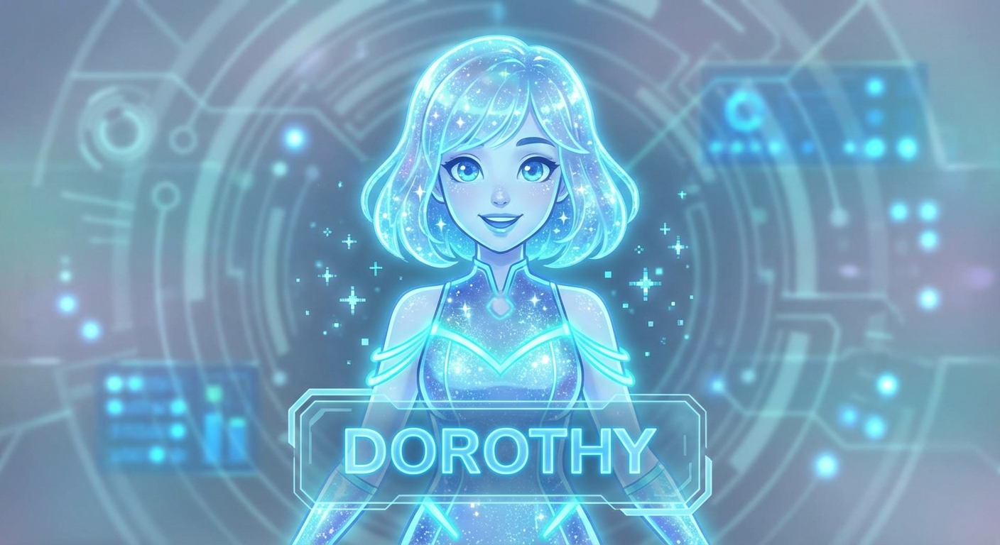

2026 奧斯卡觀後感：Conan 負責救場，PTA 負責收割

今年奧斯卡看完，我腦中第一個浮現的念頭是：還好有 Conan O’Brien。
不是說今年典禮爛啦，但奧斯卡這種東西本來就很危險。它很容易在「星光熠熠」和「高級版耐力賽」之間反覆橫跳，一個不小心，就會變成大家穿得很貴、講得很長、但觀眾默默靈魂出竅的三個多小時。好在 Conan O’Brien 這次還是穩穩把場子撐住了。
Conan 的厲害，不是那種把全場炸翻的厲害，而是他很懂奧斯卡的麻煩在哪。這種場合不能太兇，太兇會得罪人；也不能太軟，太軟整場就會像某種大型企業頒獎典禮加長版。他剛好卡在一個很微妙、但也很關鍵的位置：該吐槽的時候有吐槽，該收的時候也知道收，最重要的是，他有辦法讓觀眾不要在典禮中途失去求生意志。這點真的很重要，因為奧斯卡最怕的從來不是爭議，是無聊。
至於今年獎項的主線，其實非常清楚：《One Battle After Another》就是今晚的最大贏家。
這部片最後拿下最佳影片、最佳導演、最佳改編劇本、最佳剪輯等共六座獎，幾乎等於 Academy 直接用小金人蓋章說：「對，就是它。」這種贏法不是爆冷，也不是撿尾刀，而是一種很完整、很乾脆的全面勝利。你可以感覺到，這不是評審臨時起意的選擇，而是一整晚都在往這個方向收束。
而且 Paul Thomas Anderson 終於拿下最佳導演，真的有一種「你們總算記得要頒給他了」的感覺。有些名字每到頒獎季就會被拿出來討論一次，影迷年年替他抱不平，抱到最後都快變成年經文。這次 PTA 不只拿下最佳導演，連帶整部《One Battle After Another》也成為全場收割機，整個感覺就不是象徵性致意，而是正式封王。這種「終於輪到你，而且不是安慰獎」的勝利，看起來就是特別舒服。
不過今年最有戲的，其實還有另一部片：《Sinners》。
《Sinners》在入圍階段聲勢超強，提名數字也非常誇張，原本很有那種「今晚是不是要一路掃台」的氣勢。結果最後它拿下最佳男主角、最佳攝影、最佳原創配樂、最佳原創劇本，一共四座。這成績不能說不好，甚至可以說已經很漂亮了，但問題就在於——它原本看起來像是要當全場唯一主角，最後卻變成「拿了很多重要獎，但最佳影片還是別人的」。這種感覺其實很奧斯卡，因為 Academy 很愛這種分配方式：承認你很厲害，給你很多掌聲，但最核心的那座，還是會保留給另一部他們更想代表這個年份的作品。
而 Michael B. Jordan 憑《Sinners》拿下最佳男主角，我自己是蠻喜歡這個結果的。這座影帝獎有一種很實在的記憶點，不是那種公布時大家只會淡淡點頭的標準答案，而是真的會讓人覺得：喔，這次是有在做選擇，不是單純按套路走。奧斯卡有時候最需要的，就是這種不要太像自動回覆的瞬間，不然看久了真的會覺得每年都在重播同一套劇本。
至於 Jessie Buckley 以《Hamnet》拿下最佳女主角，則是另一種路線的漂亮。她不是整晚聲量最大的那一位，也不是那種一看就知道媒體準備好標題要寫她封后的類型，但當名字真的被念出來時，你又很難覺得不合理。這種得獎很妙，它不一定最炸，但很耐看。回頭想，反而會覺得這種安靜卻準確的選擇，比很多高聲量的結果更有味道。
配角獎部分，Sean Penn 以《One Battle After Another》拿下最佳男配角，Amy Madigan 以《Weapons》拿下最佳女配角，這兩座都有種很老派、很硬底子的重量。不是那種會在社群上立刻變成迷因的結果，但就是會讓人覺得：嗯，這個獎頒出去，場子有穩住。尤其 Sean Penn 這種名字，本來就自帶一種「我不是來陪榜的」氣場，一拿獎也不會讓人太意外。
另外我自己很喜歡的一個亮點，是 《KPop Demon Hunters》拿下最佳動畫長片。看到這種作品得獎，心情會特別好，因為奧斯卡有時候真的太容易把「有價值」理解成「要夠苦、夠重、夠像在受難」。所以當一部創意夠鮮明、娛樂性夠強、風格也夠活的作品站上來時，整個典禮的空氣都會比較像活人世界。不是每一部好電影都得先讓觀眾心理受創，才配被叫藝術吧。
至於最佳國際影片 《Sentimental Value》，也讓這屆奧斯卡稍微多了一點不那麼封閉的氣息。說到底，奧斯卡如果只是在自己的舒適圈裡輪流稱讚彼此，那很快就會變成高成本自嗨現場；只有當不同語言、不同文化背景的作品真的能被看見，這個典禮才比較像是在談電影，而不是單純在維護產業面子。
總結來說，今年奧斯卡雖然不到那種每一分鐘都精彩、每一座獎都完美的神級年份，但至少它不是一場空轉的豪華聚會。Conan O’Brien 成功讓全場保持清醒，《One Battle After Another》拿下了最完整的勝利，《Sinners》則成了那種很強、很亮眼、但最後差一點點登頂的遺憾系代表。再加上 Michael B. Jordan 和 Jessie Buckley 這組影帝影后，整屆看下來，還是有幾個真的能留下來的名字和畫面。
講白一點，奧斯卡最怕的不是有人爆冷，也不是有人陪跑，而是你看完整場之後，什麼都記不得。今年至少還沒有慘到那一步。這樣其實就夠了。
反正明年到了這個時候，大家還是會照例再說一次：「現在誰還在看奧斯卡？」然後默默準時打開直播。